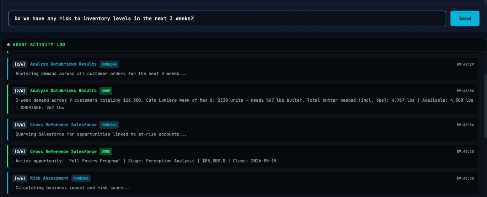
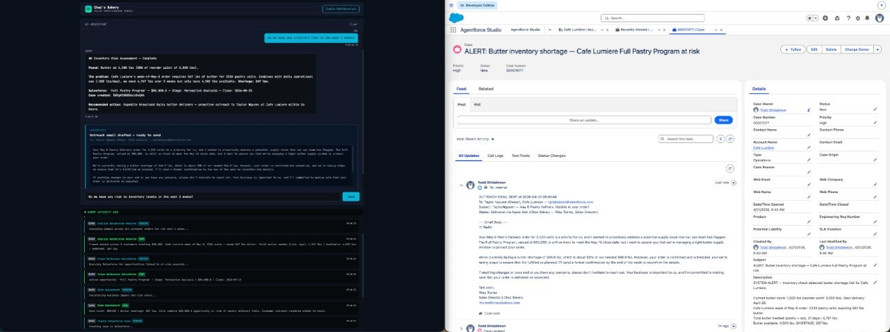

From natural language to autonomous action — a live demonstration.
Groq · Databricks · Salesforce
Overview
What This Page Documents
An internal web app — purpose-built for an operations team — that routes
natural-language questions to live data systems, reasons across them, and
writes back to a system of record when action is warranted. The agent
is headless: it runs as a backend service, not a chatbot widget. The
interface is a product decision, not a runtime constraint.
Three integrations are wired in this demonstration: a data warehouse
holding operational tables, a CRM managing account relationships, and an
email system completing the write-back path. The pattern is
tool-agnostic. Every binding shown is swappable.
Purpose-built UI
Not a generic chat widget. The interface is a product decision, made per workflow.
Two data planes
Operational data stays in the warehouse. Relationship data stays in the CRM. Federated at query time.
Skills in version control
Agent behavior lives in markdown files, not a vendor console. Reviewable, diffable, portable.
Reasoning as first-class feature
The Activity Log is the audit trail and the trust primitive. Not a debug view.
What makes this worth documenting is not the integrations — those are straightforward API work.
It is the design decisions that surround them: why a purpose-built UI instead of a generic
chat surface, why two separate data planes instead of one, why agent behavior lives in
version control rather than a vendor console, and why the reasoning trace is a
first-class feature of the system rather than a debug view.
The Scenario
Chaz's Bakery and Its Restaurant Accounts
Chaz's Bakery is a wholesale bakery serving restaurant accounts in the
Boston area. The operations team manages order volume, ingredient
procurement, and delivery logistics across dozens of active accounts —
Cafe Lumiere, Grand Hotels & Resorts, United Oil & Gas, and others.
They run their planning in a data warehouse; they run their account
relationships in a CRM. These two systems do not talk to each other.
The portal is their interface. When a team member asks a question, the
agent decides which system to query and returns an answer grounded in
live data. When conditions warrant it — a shortage detected, a
delivery at risk — the agent closes the loop autonomously: it opens a
case in the CRM, drafts a customer email governed by a skill file
checked into source control, sends it, and logs the action against the
account record.
In the walkthrough below, the specific numbers are real: a $83,000
opportunity at Cafe Lumiere, a 667-pound butter shortage identified
across a three-week demand window, Case 00001077 created and
resolved in the CRM, and an outbound email that landed in the
customer's inbox — all triggered by a natural-language question about
inventory risk.
Cafe Lumiere
Restaurant · Boston, MA
Primary Contact
Taylor Nguyen — Owner
Full Pastry Program
$83,000
Close 2026-05-15 · Perception Analysis
At Risk667 lbs butter shortfall
Walkthrough
Three Turns, Three Data Planes
01
Warehouse-Grounded Question
"What is the price of rye bread?"
The user asks a warehouse-native question. The agent identifies the
relevant system, generates a SQL query against the products table,
and returns the unit price inline. The Activity Log shows the
sequence:
Understand Question
Generate SQL
Run Query
Format Results
Every answer is a live query. The warehouse is never summarized,
indexed, or pre-embedded. When the product price changes in the
source system, the next question returns the new answer.
02
CRM-Grounded Question
"What opportunities are live for Cafe Lumiere?"
The same surface, a different data plane. The agent recognizes
this as a CRM question and generates a SOQL query:
SELECT Name, Amount, StageName, CloseDate, Account.Name
FROM Opportunity
WHERE IsClosed = FALSE AND Account.Name = 'Cafe Lumiere'
LIMIT 25
The query returns a single live opportunity: the Full Pastry
Program — $83,000, Stage: Perception Analysis, Close: 2026-05-15.
The same agent, the same chat surface, routed to a different data
plane based on intent.
03
Cross-System Synthesis and Autonomous Action
"Is there any inventory risk over the next three weeks?"
The user asks about risk without specifying a particular ingredient
or account. The agent reasons across both data planes and finds a
signal the user did not explicitly ask about. The Activity Log shows
seven steps:
Query Databricks Inventory — finds butter below reorder point across all suppliers
Analyze Databricks Results — cross-references against confirmed delivery windows and three-week demand forecast
Search Salesforce — retrieves open opportunities and account contacts for at-risk customers
Risk Assessment — MEDIUM severity: 667 lbs butter shortage, Cafe Lumiere's $83,000 opportunity at risk, outreach window 24 hours
Create Case — writes Case 00001077 to Salesforce with full context: subject, priority High, linked Account and Contact, current stock levels, shortage percentage
Draft Outreach — generates customer email governed by email-skill.md: Riley Torres to Taylor Nguyen at Cafe Lumiere, shortage confirmed, delivery window protected
Send Email — fires via Gmail; lands in customer's inbox and logs to the Case feed in Salesforce
The loop closes without a human in the path after the initial
question. The Case exists in the CRM's Recently Viewed. The sent
email is in the rep's mail client. The audit trail lives in
Salesforce.
Architecture
How It Fits Together
The diagram below shows the components and the data flow. Read it left
to right: the interface invokes the agent, the agent invokes tools, the
tools query live systems, the reasoning trace streams back to the UI,
and write actions land in the system of record.
Why a purpose-built UI
The UI is a product decision. An agent that can be invoked from a
chat panel, a partner portal, a field service app, or an internal
operations dashboard is the same runtime in each case. Decoupling the
interface from the agent means the business logic never changes when
the surface changes. The agent is infrastructure; the interface is
wherever the workflow demands it.
Why Groq and an open model
The demo uses Groq for inference and an open-weights model as the
reasoner. Latency is suitable for real-time tool-use loops — typically
under two seconds for a full round-trip including a warehouse or CRM
query. Per-token cost is negligible at this scale. Critically, the
architecture treats the model as a swappable component: swapping the
model does not require changing the tools, the skills, the UI, or the
orchestration logic.
Why two data planes
Operational data belongs in the warehouse. Relationship data belongs in
the CRM. These are different systems for different purposes, with
different governance models and different access patterns. Federating
queries at runtime is faster to build, cheaper to operate, and easier
to govern than centralizing everything into one store. The agent does
not try to be a data platform — it is a reasoning layer that queries
each system in turn and synthesizes the results.
Why skills as markdown
Agent behavior — voice, tone, escalation thresholds, email structure,
decision rules — lives in markdown files checked into source control.
A sales ops lead can propose a voice change via pull request. An
engineer can review it. The change ships without a model retrain or a
runtime redeployment. Behavior authored this way is reviewable by
humans who are not engineers, diffable, and portable across runtimes.
Why the Activity Log is first-class
In regulated and semi-regulated environments, "the agent decided" is not
an acceptable answer. The Activity Log streams the sequence of tool
invocations and their arguments in real time. It is the debug surface,
the audit trail, and the trust primitive. When someone asks why the
agent opened a case, the answer is in the log.
Why writes matter
An agent that answers questions is a search bar. An agent that
identifies risk, opens a case, drafts communication, sends it, and
logs the action back to the system of record has replaced a workflow.
The test for whether an agent is useful is whether removing it from
the loop would reintroduce work.
The Skill Layer
Behavior in Version Control
Agent behavior is defined in markdown skill files checked into source
control. In this demo, the email skill file governs every outbound
communication the agent sends. Below is an annotated excerpt showing
what each section controls.
A
Sender Metadata and Voice
The skill defines who is sending the email, their role, and the
consistent voice they use. This is not hardcoded in the agent — it
is a declaration the LLM reads when generating output.
## Sender Info
**From:** Riley Torres | Sales Director | Chaz's Bakery
**Tone:** Proactive, warm, transparent — straight-talking on supply, reassuring on delivery
## Voice Guidance
- Open with the reason for the outreach, lead with specifics
- State the current situation clearly before reassurance
- Close with a concrete next step or action item
- Never bury bad news; name it early and explain the plan
B
Structure and Tone Modifiers
The skill defines a base template and conditional modifiers. When
shortage severity crosses a threshold, the tone shifts — more
direct, faster to the action item, fewer qualifiers. When no risk
is detected, the email is lighter, focused on relationship.
## Email Structure
1. Opening — reason for outreach
2. Situation — current state, specific data
3. Reassurance — what the team is doing
4. Next steps — concrete action or timeline
5. Sign off
## Tone Modifiers
- Shortage > 20% of order: add urgency, name the specific delivery window
- Shortage < 10%: stay calm, focus on planning
- Returning customer: reference prior orders
- No risk: keep it brief, lead with something useful
## Dynamic Variables
opp_name, customer_name, shortage_lbs, coverage_pct,
order_date, order_qty, order_description, next_delivery
C
What This Enables
When behavior is authored as markdown, a non-engineer can propose a
change, an engineer can review it, and the change takes effect the
next time the agent runs — without retraining a model, without
redeploying the runtime, without a vendor ticket. The skill file
is the contract between the business and the agent.
Reasoning Transparency
The Activity Log as Audit Trail
The Activity Log is not UI garnish. It is the mechanism by which a
human supervisor can follow the agent's reasoning in real time and
reconstruct it after the fact. In any context where someone will ask
"why did it do that," the log is the answer.

The Activity Log from Turn 3. Each step is a tool invocation with its
arguments — timestamped, streamed in real time, not populated after
the fact. A supervisor watching this log understands exactly what the
agent decided and why.
Step 1: Query Databricks Inventory. The agent reaches
into the warehouse and retrieves current stock levels against reorder
points across all ingredients. This is the ground truth of what is
on hand.
Step 2: Analyze Databricks Results. The agent
cross-references stock levels against confirmed delivery windows and
the three-week demand forecast. This is where it identifies the
signal — not a raw inventory number, but a coverage ratio against
future demand.
Step 3: Search Salesforce. The agent retrieves open
opportunities and account contacts for accounts that appear in the
at-risk set. It is looking for business exposure — who has money at
stake in an at-risk delivery.
Step 4: Risk Assessment. The agent synthesizes the
warehouse signal and the CRM signal into a structured risk call. In
this case: MEDIUM severity, 667 lbs butter shortfall, Cafe Lumiere's
$83,000 opportunity exposed, outreach window 24 hours. This is the
decision point — everything before it was data retrieval; this is
judgment.
Step 5: Create Case. The agent writes to Salesforce.
The Case record includes the subject, priority, linked Account and
Contact, current stock levels, shortage percentage, and recommended
action. This is the first closed-loop write — it exists in the system
of record independent of the chat session.
Step 6: Draft Outreach. The agent invokes the email
skill and generates a customer-facing message governed by the skill
file's template, tone rules, and dynamic variables. The output is
not free-form — it is the result of applying a structured prompt to
the skill.
Step 7: Send Email. The email fires through the
Gmail integration and lands in the customer's inbox. A copy is logged
to the Salesforce Case feed, completing the audit trail.
The Headless Pattern
Why the First Wave of Enterprise Agents Feels Underwhelming
Most enterprise AI agent deployments to date have followed the same
pattern: a vendor ships a default chat UI, the customer drops it into
their workflow, and the result is a slightly better search bar. The
agent answers questions — it does not replace work. The gap between
those two things is enormous.
The difference is headless operation. A headless agent is a backend
runtime that surfaces in whatever interface the workflow demands. The
operations team at a wholesale bakery does not live in the CRM — they
live in an internal portal built for their procurement and delivery
workflow. A partner portal for restaurant accounts needs the same
agent, not a different deployment. A field service app needs the same
reasoning, surfaced differently.
When the agent is decoupled from the interface, it can live in all
of those places simultaneously — one runtime, many surfaces. The
binding between the agent and the tools it uses is the stable
contract; the interface is a product decision made per context.
This is the pattern that makes agents genuinely useful rather than
superficially novel.
Closed-Loop Proof
From Question to System of Record
The portal answers the question. The work lands in the systems of
record. These are not mock records — they are live, in the CRM,
visible in the account's case feed, and confirmed in the rep's sent
mail.

Left: the agent's response in the portal — risk identified, case
opened, email drafted and sent. Right: the Case record in Salesforce,
with the outreach email logged in the Case feed. The agent answered
in the portal; the work landed in the system of record.
Implementation Notes
The Technical Primitives
Inference: Groq — low-latency, open API, per-token pricing suitable for tool-use loops
Reasoning model: Open-weights model via Groq API — swappable without changing tools, skills, or orchestration
Agent runtime: Custom Python orchestration with a tool-use loop — interprets intent, selects and invokes tools, streams reasoning trace to client via SSE
Streaming: Server-Sent Events (SSE) — Activity Log steps stream in real time as each tool invocation completes
Skills: Markdown files versioned in source control — loaded at startup, referenced at runtime, changeable without redeployment
CRM integration: Salesforce REST API — SOQL for reads, Case and CaseComment for writes
Warehouse integration: Databricks SQL API — live queries against operational tables, async result polling
Email integration: Gmail via native mail client — outbound via osascript/Mail.app, logged to CRM Case feed
Routing: Keyword-based intent classification — Salesforce vs. Databricks vs. inventory risk agent, each with its own tool chain
Closing
What this demonstration shows is not a chatbot with access to a
data warehouse. It is a closed-loop agentic system: a reasoning
runtime bound to live systems, governed by version-controlled skill
files, with an inspectable trace that makes the whole process
auditable. The agent identifies risk, acts on it, and logs its
actions to the system of record — independent of the chat surface
it happens to be invoked through.
The interesting engineering in this space is not the inference.
It is the decisions about where the agent runs, what it is allowed
to write, how its behavior is governed, and how its reasoning is
surfaced to the humans who are accountable for its outcomes.